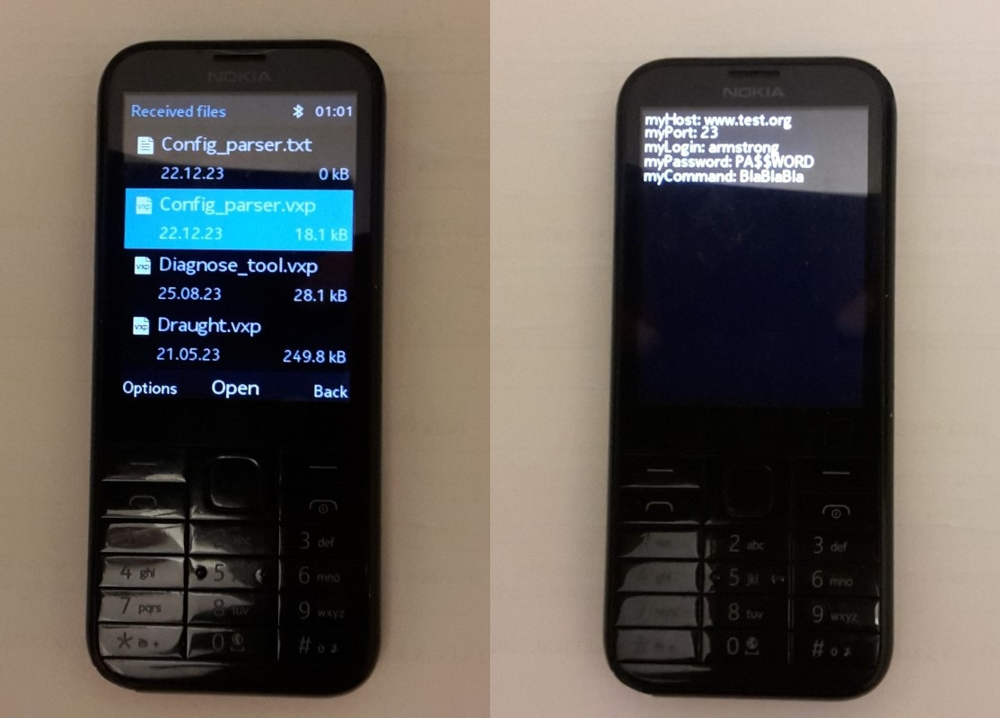

App demonstrate how to use text file as config data source. If app and text file with name identifical app name is on same directory, this app get five parameters from five text lines divided by new line and show on display. For using with Nokia mobile phone, app must be signed with IMSI (your SIM card) code. https://vxpatch.luxferre.top. Application files - "Config_parser.vxp"
